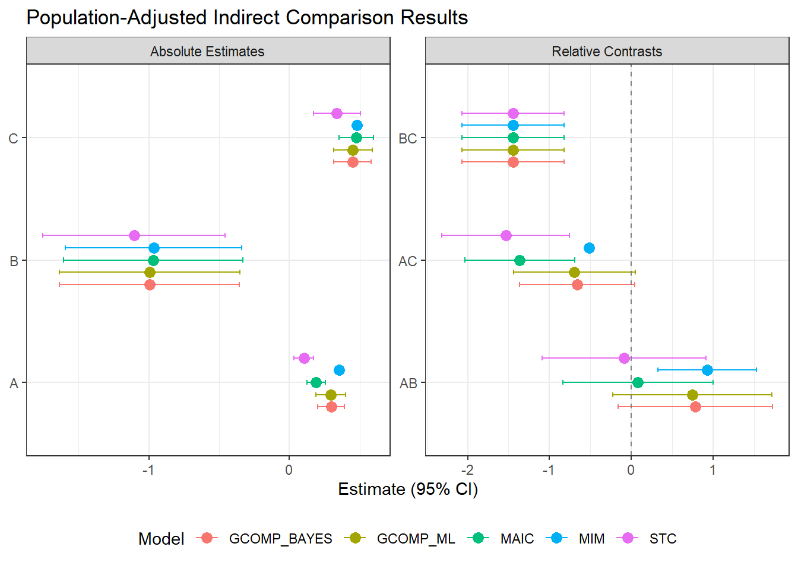
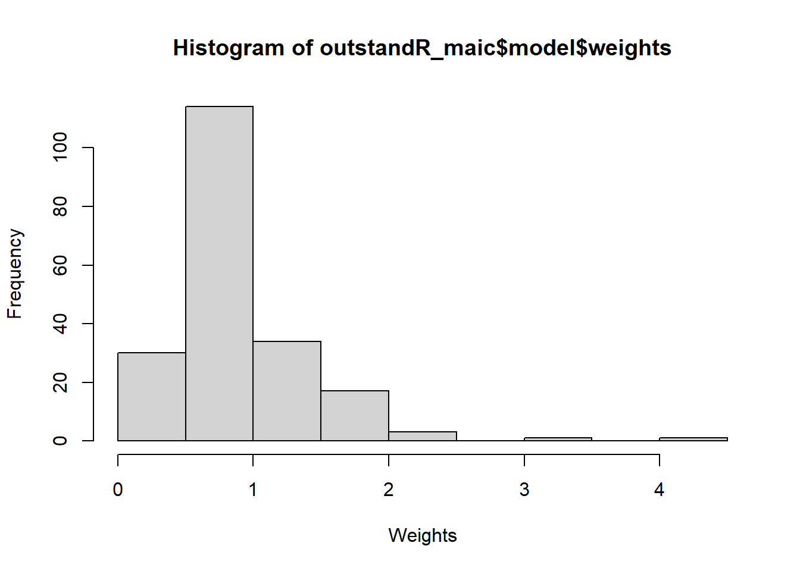
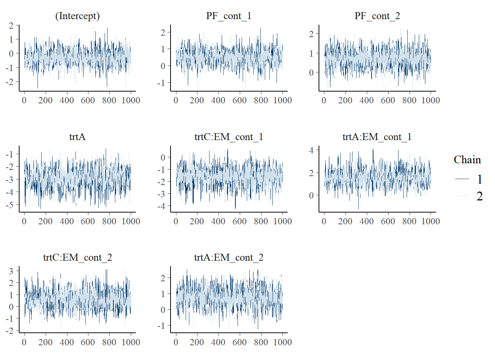

install.packages("outstandR")Using the outstandR package
This section gives a practical demonstration of the core functionality available in the package.
Available internal data sets
To illustrate the use of outstandR, we show its application with synthetic datasets. These are contained in the outstandR package and can be loaded via the data() function.
The naming convention that we use is:
<comparator><reference>_<level>_<outcome>Y_<covariates>X
where:
- comparator and reference are the treatment arm names.
- level is either
IPDfor individual-level patient data orALDfor aggregate-level data. - outcome is
bin(binary),count(count), orcont(continuous). - covariates is
bin,cont, ormixed.
For example, AC_IPD_binY_binX is the name of the data set for treatments \(A\) vs \(C\), patient-level data, and both binary-valued outcome and covariates.
Installation
First, install outstandR from CRAN:
or the development version from GitHub using R-universe:
install.packages("outstandR",
repos = c("[https://statisticshealtheconomics.r-universe.dev](https://statisticshealtheconomics.r-universe.dev)",
"[https://cloud.r-project.org](https://cloud.r-project.org)"))Illustrative examples
Attach the package to the current environment.
library(outstandR)Binary outcome data
In the first example, consider binary outcome data and continuous covariates only. Load the aggregate level and individual-patient data into the environment.
data(AC_IPD_binY_contX) # AC individual-level patient data
data(BC_ALD_binY_contX) # BC aggregate-level dataInspecting the IPD, we can see that each row corresponds to an individual and it has four covariates: two effect modifiers only, and two prognostic factors only. These are all continuous valued and the outcome is binary valued 0, 1.
# individual-level data
head(AC_IPD_binY_contX) id PF_cont_1 PF_cont_2 EM_cont_1 EM_cont_2 trt y true_eta
1 1 0.0826453 0.71645068 0.66422255 -0.09202652 A 0 -1.58891404
2 2 0.6957433 0.38608723 0.79875530 0.74880584 C 1 0.14986776
3 3 0.6516889 0.50572444 0.39944706 -0.07230380 A 0 -1.43868552
4 4 0.2165975 0.35783123 0.25957984 -0.55405590 A 0 -2.09172428
5 5 0.2605580 -0.05826527 -0.10696235 0.33762456 A 0 -2.13936317
6 6 0.1110818 0.64041589 0.04867791 0.34980415 C 1 -0.07910151Similarly, the ALD has the corresponding covariates but not as separate columns (wide format) but in a long format with all covariate names in the variable column. Notice that the treatment column trt is NA for the covariate because we assume that the covariate distribution is the same between treatment arms.
# aggregate-level data
print(BC_ALD_binY_contX)# A tibble: 16 × 4
variable statistic value trt
<chr> <chr> <dbl> <chr>
1 EM_cont_1 mean 0.651 <NA>
2 EM_cont_1 sd 0.391 <NA>
3 EM_cont_2 mean 0.592 <NA>
4 EM_cont_2 sd 0.416 <NA>
5 PF_cont_1 mean 0.653 <NA>
6 PF_cont_1 sd 0.371 <NA>
7 PF_cont_2 mean 0.583 <NA>
8 PF_cont_2 sd 0.437 <NA>
9 y mean 0.615 C
10 y sd 0.490 C
11 y sum 40 C
12 y mean 0.274 B
13 y sd 0.448 B
14 y sum 37 B
15 <NA> N 65 C
16 <NA> N 135 B The next step is to define the formula, which specifies the relationship between the covariates, treatments and outcome. For this example, the outcome regression is
\[ \text{logit}(p) = \beta_0 + \beta^{PF}_{1} X^{PF}_{1} + \beta^{PF}_{2 }X^{PF}_{2} + (\beta_{trt} + \beta^{EM}_{1} X^{EM}_{1} + + \beta^{EM}_{2} X^{EM}_{2}) \mathbb{I}(trt = 1), \]
where \(\mathbb{I}()\) is the indicator function, taking value 1 when true and 0 otherwise. The corresponding R formula used by outstandR is independent of the particular type of data and so we do not include a link function at this stage, i.e, the identity link.
# linear formula for the outcome model
lin_form_contX <- as.formula("y ~ PF_cont_1 + PF_cont_2 + trt + trt:EM_cont_1 + trt:EM_cont_2")That is, the main effects are the prognostic factors (PF_cont_1 and PF_cont_2) and the treatment trt. The interaction terms are with the treatment defined as effect modifiers (EM_cont_1 and EM_cont_2).
For the MAIC approach, we define the balancing formula as
# linear formula for the outcome model
bal_form_contX <- as.formula(
"~ PF_cont_1 + PF_cont_2 + EM_cont_1 + EM_cont_2")Relative treatment effects
Let \(p_C\) be the proportion of events in the comparator treatment arm and \(p_B\) be the proportion of events in the reference treatment arm. For the logit link with binary data, the mean treatment effect is the log-odds ratio:
\[ \Delta_{BC} = \text{logit}(p_B) - \text{logit}(p_C) \]
with variance:
\[ \text{Var}(\Delta_{BC}) = \frac{1}{y_B} + \frac{1}{N_B - y_B} + \frac{1}{y_C} + \frac{1}{N_C - y_C}, \]
where \(y_t\) are the number of events and \(N_t\) are the total number of subjects for treatment \(t\).
A full list including alternative treatment effects and variance components available for binary outcome data is given in Table X.
Running outstandR()
Having completed the set-up steps, we are ready to proceed with performing the indirect treatment comparison with outstandR(). In each of the calls, we will explicitly set the random seed for reproducibility.
For the MAIC approach, we define the outcome and balancing formulas explicitly in a list. This explicitly separates the statistical intent of weighting versus regression:
outstandR_maic <-
outstandR(ipd_trial = AC_IPD_binY_contX,
ald_trial = BC_ALD_binY_contX,
strategy = strategy_maic(
formula = list(outcome_model = formula("y ~ trt"),
balance_model = bal_form_contX),
family = binomial(link = "logit")),
seed = 12345)Treatment is guessed as: trt── Starting outstandR Analysis ─────────────────────────────────────────────────ℹ Strategy: maic── MAIC Execution ──ℹ Calculating weights using method of moments...ℹ Starting Bootstrap with 1000 replicates.As detailed in Section X, the outstandR() function returns a list object. To help with interpreting the results, outstandR includes a convenience print method.
print(outstandR_maic)Object of class 'outstandR'
ITC algorithm: MAIC
Model: binomial
Scale: log_odds
Common treatment: C
Individual patient data study: A vs C
Aggregate level data study: B vs C
Confidence interval level: 0.95
Contrasts:
# A tibble: 3 × 5
Treatments Estimate Std.Error lower.0.95 upper.0.95
<chr> <dbl> <dbl> <dbl> <dbl>
1 AB 0.0816 0.220 -0.838 1.00
2 AC -1.36 0.118 -2.04 -0.689
3 BC -1.44 0.102 -2.07 -0.817
Absolute:
# A tibble: 3 × 5
Treatments Estimate Std.Error lower.0.95 upper.0.95
<chr> <dbl> <dbl> <dbl> <dbl>
1 A 0.190 0.00117 0.123 0.257
2 B -0.969 0.106 -1.61 -0.331
3 C 0.475 0.00390 0.352 0.597This contains the same information as the raw output but in a more presentable format. The first block of text provides modelling details, and the following tibbles show the contrast and absolute effects, respectively. The STC, G-computation and MIM analyses are performed similarly but with the specified instead of the .
Warning: `strategy_stc()` was deprecated in outstandR 1.X.X.
ℹ Please use `strategy_gcomp_ml()` instead.── Starting outstandR Analysis ─────────────────────────────────────────────────ℹ Strategy: stc── Starting outstandR Analysis ─────────────────────────────────────────────────ℹ Strategy: gcomp_ml── G-Computation (ML) Execution ──ℹ Fitting initial model...ℹ Starting Bootstrap: 1000 replicates.ℹ Simulating pseudo-pop (N=1000) per replicate.! Large computation detected (1000000 simulations). Grab a coffee.── Starting outstandR Analysis ─────────────────────────────────────────────────ℹ Strategy: gcomp_bayes── G-Computation (Bayesian) Execution ──ℹ Compiling/Sampling Stan model...── Starting outstandR Analysis ─────────────────────────────────────────────────ℹ Strategy: mimWarning in sqrt(contrast_variances$AC): NaNs producedForest plots of the results across all adjustment strategies for the binary outcome are given in Figure~fig:summary-forest-plot by calling the following.
plot(outstandR_maic, outstandR_stc, outstandR_gcomp_ml,
outstandR_gcomp_bayes, outstandR_mim)
By passing the result objects from strategy_maic(), strategy_stc(), strategy_gcomp_ml(), and strategy_mim() into a single plot() call, we can visually assess the stability of the treatment effect estimates. For example, the relative AB contrast is consistently estimated across all methods excluding STC, with overlapping 95% confidence intervals, providing confidence in the robustness of the indirect comparison despite the different underlying statistical mechanics of weighting versus regression standardization.
Continuous outcome data
Analogous to the first example with binary outcomes and continuous covariates, we now extend this for the case of continuous outcomes and a mixture of binary and continuous covariates. The same steps are followed.
First, read in the data.
# individual-level data
data(AC_IPD_contY_mixedX)
head(AC_IPD_contY_mixedX) id X1 X2 X3 X4 trt y true_eta
1 1 0.3066158 0 1.0794085 0 A -2.3321553 -0.9789591
2 2 0.5961703 1 0.6164710 0 A -0.7473152 -0.8840576
3 3 0.1496635 1 0.5737457 0 A -1.2441749 -1.2402780
4 4 0.1393548 0 0.4687338 0 C -0.7905105 -0.1785051
5 5 0.5672248 0 0.5305725 0 A -3.3441703 -1.3985394
6 6 0.4897103 1 0.1289250 1 A -1.2286456 -0.3974177# aggregate-level data
data(BC_ALD_contY_mixedX)
print(BC_ALD_contY_mixedX)# A tibble: 14 × 4
variable statistic value trt
<chr> <chr> <dbl> <chr>
1 X1 mean 0.608 <NA>
2 X1 sd 0.436 <NA>
3 X2 prop 0.72 <NA>
4 X3 mean 0.598 <NA>
5 X3 sd 0.385 <NA>
6 X4 prop 0.51 <NA>
7 y mean 0.493 C
8 y sd 1.08 C
9 y sum 36.0 C
10 y mean -0.434 B
11 y sd 1.39 B
12 y sum -55.1 B
13 <NA> N 73 C
14 <NA> N 127 B The formats are the same as the previous example but now in the ALD the binary-valued covariates have statistic entry prop. Covariates X1 and X3 are continuous and X2 and X4 are binary.
The formula for this example is also a little more complicated. We shall assume that some of the covariate can be both prognostic factors and effect modifiers, so the regression is:
\[ y = \beta_0 + \beta_1 X_1 + \beta_2 X_2 + \beta_3 X_3 + (\beta_{trt} + \alpha_1 X_1 + \alpha_2 X_2 + \alpha_4 X_4 ) \mathbb{I}(trt = 1) \]
This corresponds to the R formula given by:
lin_form_mixedX <- as.formula("y ~ X1 + X2 + X3 + trt + trt:(X1 + X2 + X4)")The balance formula is given by
bal_form_mixedX <- as.formula("~ X1 + X2 + X3 + X4")Relative treatment effect
Let \(\bar{y}_B\) be the mean in the comparator arm and \(\bar{y}_C\) be the mean in the reference arm. Then the mean treatment difference is simply:
\[ \Delta_{BC} = \bar{y}_B - \bar{y}_C \]
The variance of the relative treatment effect is:
\[ \text{Var}(\Delta_{BC}) = \frac{s_B^2}{N_B} + \frac{s_C^2}{N_C} \]
where, for treatment arm \(t\), \(N_t\) and \(s_t^2\) are the number of patients and the observed standard deviation, respectively.
Running outstandR()
A difference from the previous binary outcome data example is the family = gaussian(link = "identity") argument indicating a Normal linear regression. The full call to outstandR() is:
outstandR_maic <-
outstandR(
ipd_trial = AC_IPD_contY_mixedX,
ald_trial = BC_ALD_contY_mixedX,
strategy = strategy_maic(
formula = list(outcome_model = formula("y ~ trt"),
balance_model = bal_form_mixedX),
family = gaussian(link = "identity")),
seed = 12345
)Treatment is guessed as: trt── Starting outstandR Analysis ─────────────────────────────────────────────────ℹ Strategy: maic── MAIC Execution ──ℹ Calculating weights using method of moments...ℹ Starting Bootstrap with 1000 replicates.Again, if we interrogate the output we see the same list format. The differences from the first example are the model and scale components correspond to the continuous input data used. That is, the default output contrast is the mean difference.
str(outstandR_maic, max.level = 1)List of 13
$ results :List of 2
$ call : language outstandR(ipd_trial = AC_IPD_contY_mixedX, ald_trial = BC_ALD_contY_mixedX, strategy = strategy_maic(formula| __truncated__ ...
$ outcome_model:Class 'formula' language y ~ trt
.. ..- attr(*, ".Environment")=<environment: R_GlobalEnv>
$ balance_model:Class 'formula' language ~X1 + X2 + X3 + X4
.. ..- attr(*, ".Environment")=<environment: R_GlobalEnv>
$ formula :Class 'formula' language y ~ trt + X1 + X2 + X3 + X4
.. ..- attr(*, ".Environment")=<environment: R_GlobalEnv>
$ CI : num 0.95
$ ref_trt : chr "C"
$ ipd_comp : chr "A"
$ ald_comp : chr "B"
$ scale : chr "mean_difference"
$ var_method : NULL
$ family : chr "gaussian"
$ model :List of 3
- attr(*, "class")= chr [1:2] "outstandR" "list"print(outstandR_maic)Object of class 'outstandR'
ITC algorithm: MAIC
Model: gaussian
Scale: mean_difference
Common treatment: C
Individual patient data study: A vs C
Aggregate level data study: B vs C
Confidence interval level: 0.95
Contrasts:
# A tibble: 3 × 5
Treatments Estimate Std.Error lower.0.95 upper.0.95
<chr> <dbl> <dbl> <dbl> <dbl>
1 AB -0.231 0.0644 -0.729 0.266
2 AC -1.16 0.0333 -1.52 -0.800
3 BC -0.926 0.0311 -1.27 -0.581
Absolute:
# A tibble: 3 × 5
Treatments Estimate Std.Error lower.0.95 upper.0.95
<chr> <dbl> <dbl> <dbl> <dbl>
1 A -1.09 0.00999 -1.28 -0.890
2 B -0.855 0.0547 -1.31 -0.396
3 C 0.0718 0.0236 -0.230 0.373The corresponding calls to outstandR() for the other analyses follow similarly.
── Starting outstandR Analysis ─────────────────────────────────────────────────ℹ Strategy: stc── Starting outstandR Analysis ─────────────────────────────────────────────────ℹ Strategy: gcomp_ml── G-Computation (ML) Execution ──ℹ Fitting initial model...ℹ Starting Bootstrap: 1000 replicates.ℹ Simulating pseudo-pop (N=1000) per replicate.! Large computation detected (1000000 simulations). Grab a coffee.── Starting outstandR Analysis ─────────────────────────────────────────────────ℹ Strategy: gcomp_bayes── G-Computation (Bayesian) Execution ──ℹ Compiling/Sampling Stan model...── Starting outstandR Analysis ─────────────────────────────────────────────────ℹ Strategy: mimWarning in sqrt(contrast_variances$AC): NaNs producedplot(outstandR_maic, outstandR_stc, outstandR_gcomp_ml,
outstandR_gcomp_bayes, outstandR_mim)
Count outcome data
First, read in and view the two data sets.
# individual-level data
data(AC_IPD_countY_contX)
head(AC_IPD_countY_contX) id PF_cont_1 PF_cont_2 EM_cont_1 EM_cont_2 trt y true_eta
1 1 -0.03120828 0.2000877 0.7946610 0.59843299 A 0 -1.69699568
2 2 0.55281009 0.8153046 0.7419797 0.02458683 A 0 -1.11665932
3 3 0.89707959 0.4406488 0.3849872 0.39262556 C 1 0.32724269
4 4 0.51890292 1.6089275 1.1134732 0.88850641 A 0 -0.09530927
5 5 0.49349123 0.9075975 0.6009318 -0.02910612 A 1 -1.17179280
6 6 0.48906050 0.2393630 0.4741692 0.45545576 C 1 -0.09509531# aggregate-level data
data(BC_ALD_countY_contX)
print(BC_ALD_countY_contX)# A tibble: 16 × 4
variable statistic value trt
<chr> <chr> <dbl> <fct>
1 EM_cont_1 mean 0.649 <NA>
2 EM_cont_1 sd 0.387 <NA>
3 EM_cont_2 mean 0.554 <NA>
4 EM_cont_2 sd 0.412 <NA>
5 PF_cont_1 mean 0.585 <NA>
6 PF_cont_1 sd 0.423 <NA>
7 PF_cont_2 mean 0.629 <NA>
8 PF_cont_2 sd 0.394 <NA>
9 y mean 1.65 C
10 y sd 1.52 C
11 y sum 94 C
12 y mean 0.469 B
13 y sd 0.730 B
14 y sum 67 B
15 <NA> N 57 C
16 <NA> N 143 B The formats are the same as the binary outcome data example. Let \(\lambda\) be the outcome event rate, then the equation for the outcome regression for the count data is:
\[ \log(\lambda) = \beta_0 + \beta^{PF}_{1} X^{PF}_{1} + \beta^{PF}_{2 }X^{PF}_{2} + (\beta_{trt} + \beta^{EM}_{1} X^{EM}_{1} + + \beta^{EM}_{2} X^{EM}_{2}) \mathbb{I}(trt = 1). \]
Recalling that the log link is defined separately in the outstandR() function call, we shall use the same linear formulae as for the binary outcome example, lin_form_contX and bal_form_contX.
Relative treatment effects
The default relative effect with the log link is the log relative risk, with mean:
\[ \Delta_{BC} = \ln(\bar{y}_C) - \ln(\bar{y}_B) \]
and variance:
\[ \text{Var}(\Delta_{BC}) = \frac{1}{N_B \bar{y}_B} + \frac{1}{N_C \bar{y}_C} \]
Running outstandR()
A difference from the previous outcome data examples is the family = poisson(link = "log") argument indicating a log linear regression. The full call to outstandR() is:
outstandR_maic <-
outstandR(
ipd_trial = AC_IPD_countY_contX,
ald_trial = BC_ALD_countY_contX,
strategy = strategy_maic(
formula = list(outcome_model = formula("y ~ trt"),
balance_model = bal_form_contX),
family = poisson(link = "log")),
seed = 12345)Treatment is guessed as: trt── Starting outstandR Analysis ─────────────────────────────────────────────────ℹ Strategy: maic── MAIC Execution ──ℹ Calculating weights using method of moments...ℹ Starting Bootstrap with 1000 replicates.The differences from the first example are that the model and scale attributes correspond to the input data used. That is, the default output contrast is the mean difference.
print(outstandR_maic)Object of class 'outstandR'
ITC algorithm: MAIC
Model: poisson
Scale: log_relative_risk
Common treatment: C
Individual patient data study: A vs C
Aggregate level data study: B vs C
Confidence interval level: 0.95
Contrasts:
# A tibble: 3 × 5
Treatments Estimate Std.Error lower.0.95 upper.0.95
<chr> <dbl> <dbl> <dbl> <dbl>
1 AB -0.0657 0.0692 -0.581 0.450
2 AC -1.32 0.0437 -1.73 -0.915
3 BC -1.26 0.0256 -1.57 -0.945
Absolute:
# A tibble: 3 × 5
Treatments Estimate Std.Error lower.0.95 upper.0.95
<chr> <dbl> <dbl> <dbl> <dbl>
1 A 0.336 0.00245 0.239 0.433
2 B 0.00387 0.0561 -0.460 0.468
3 C 1.26 0.0306 0.920 1.60 The corresponding calls to outstandR() for the other analyses follow similarly.
── Starting outstandR Analysis ─────────────────────────────────────────────────ℹ Strategy: stc── Starting outstandR Analysis ─────────────────────────────────────────────────ℹ Strategy: gcomp_ml── G-Computation (ML) Execution ──ℹ Fitting initial model...ℹ Starting Bootstrap: 1000 replicates.ℹ Simulating pseudo-pop (N=1000) per replicate.! Large computation detected (1000000 simulations). Grab a coffee.── Starting outstandR Analysis ─────────────────────────────────────────────────ℹ Strategy: gcomp_bayes── G-Computation (Bayesian) Execution ──ℹ Compiling/Sampling Stan model...── Starting outstandR Analysis ─────────────────────────────────────────────────ℹ Strategy: mimWarning in sqrt(contrast_variances$AC): NaNs producedplot(outstandR_maic, outstandR_stc, outstandR_gcomp_ml,
outstandR_gcomp_bayes, outstandR_mim)
User-specified outcome scales
By default, outstandR reports treatment effects on the scale corresponding to the regression model’s link function. For instance, a logistic regression specified with family binomial(link = "logit") naturally yields estimates in log-odds ratios, while a linear regression yields mean differences. However, health economic models often require parameters on specific scales, such as risk differences (RD) or relative risks (RR), to facilitate interpretation or align with decision-analytic model inputs.
| Data Type | Model Metric | Mean Difference | Variance Component |
|---|---|---|---|
| Binary | Log Odds Ratio\(^\dagger\) | \(\text{logit}(p_B) - \text{logit}(p_C)\) | \(\frac{1}{y_t} + \frac{1}{N_t - y_t}\) |
| Risk Difference | \(p_C - p_B\) | \(\frac{p_t(1 - p_t)}{N_t}\) | |
| Probit Scale Difference | \(\text{probit}(p_C) - \text{probit}(p_B)\) | \(\frac{1}{y_t} + \frac{1}{N_t - y_t}\) | |
| Log RR (cloglog) | \(\ln(-\ln(1 - p_C)) - \ln(-\ln(1 - p_B))\) | \(\frac{1}{y_t} - \frac{1}{N_t}\) | |
| Log RR (Log Link) | \(\ln(p_C) - \ln(p_B)\) | \(\frac{1}{y_t} - \frac{1}{N_t}\) | |
| Count | Log Relative Risk\(^\dagger\) | \(\ln(\bar{y}_C) - \ln(\bar{y}_B)\) | \(\frac{1}{N_t \bar{y}_t}\) |
| Rate Difference | \(\bar{y}_C - \bar{y}_B\) | \(\frac{\bar{y}_t}{N_t}\) | |
| Delta \(z\) (Signal-to-noise) | \(\sqrt{\bar{y}_C} - \sqrt{\bar{y}_B}\) | \(\frac{1}{4 N_t \bar{y}_t}\) | |
| Continuous | Mean Difference\(^\dagger\) | \(\bar{y}_B - \bar{y}_C\) | \(\frac{s_t^2}{N_t}\) |
Table X gives all of the available relative effects for each outcome data type. The scale argument in outstandR() allows users to request these alternative summary statistics directly. When converting between relative measures (e.g., odds ratios) and absolute measures (e.g., risk differences), the package automatically estimates the necessary baseline risk (\(P_0\)) from the reference treatment arm in the IPD study.
For log-odds and log-relative risk on continuous data, the R code implies a transformation of the mean before calculating the variance. For “log_odds”, it uses \(\frac{\pi^2}{3 N_t}\), which is the variance of a logit-transformed mean when the underlying data are assumed to be normal and mapped to (0,1) scale, and then transformed to logit (often used for proportions derived from continuous data or for scores that can be thought of as probabilities).
For example, to obtain a risk difference instead of the default log-odds ratio for the binary outcome analysis (previously shown in Section 4), we specify scale = "risk_difference".
outstandR_maic_rd <-
outstandR(
ipd_trial = AC_IPD_binY_contX,
ald_trial = BC_ALD_binY_contX,
strategy = strategy_maic(
formula = list(outcome_model = formula("y ~ trt"),
balance_model = bal_form_contX),
family = binomial(link = "logit")
),
seed = 12345,
scale = "risk_difference" # instead of default log-odds ratio
)Treatment is guessed as: trt── Starting outstandR Analysis ─────────────────────────────────────────────────ℹ Strategy: maic── MAIC Execution ──ℹ Calculating weights using method of moments...ℹ Starting Bootstrap with 1000 replicates.The output now displays the contrast estimates on the probability scale:
print(outstandR_maic_rd)Object of class 'outstandR'
ITC algorithm: MAIC
Model: binomial
Scale: risk_difference
Common treatment: C
Individual patient data study: A vs C
Aggregate level data study: B vs C
Confidence interval level: 0.95
Contrasts:
# A tibble: 3 × 5
Treatments Estimate Std.Error lower.0.95 upper.0.95
<chr> <dbl> <dbl> <dbl> <dbl>
1 AB 0.0566 0.441 -1.24 1.36
2 AC -0.285 0.00513 -0.425 -0.144
3 BC -0.341 0.436 -1.63 0.952
Absolute:
# A tibble: 3 × 5
Treatments Estimate Std.Error lower.0.95 upper.0.95
<chr> <dbl> <dbl> <dbl> <dbl>
1 A 0.190 0.00117 0.123 0.257
2 B 0.134 0.440 -1.17 1.43
3 C 0.475 0.00390 0.352 0.597The package determines the validity of a conversion path based on the underlying data distribution; for instance, requesting a “mean difference” for a binary outcome model will raise a validation error.
Robust variance estimation
Standard errors in population-adjusted analyses can be sensitive to model misspecification. Users can request robust (sandwich) standard errors by setting the var_method argument to "sandwich".
The following example demonstrates how to compare the naive model-based standard error with the robust sandwich estimate for a maximum likelihood g-computation analysis:
# standard STC analysis
stc_naive <-
outstandR(
ipd_trial = AC_IPD_binY_contX,
ald_trial = BC_ALD_binY_contX,
strategy = strategy_gcomp_ml(
formula = list(outcome_model = lin_form_contX),
family = binomial()),
seed = 12345,
var_method = "sample") # Default── Starting outstandR Analysis ─────────────────────────────────────────────────ℹ Strategy: gcomp_ml── G-Computation (ML) Execution ──ℹ Fitting initial model...ℹ Starting Bootstrap: 1000 replicates.ℹ Simulating pseudo-pop (N=1000) per replicate.! Large computation detected (1000000 simulations). Grab a coffee.# STC with robust variance (sandwich estimator)
stc_robust <-
outstandR(
ipd_trial = AC_IPD_binY_contX,
ald_trial = BC_ALD_binY_contX,
strategy = strategy_gcomp_ml(
formula = list(outcome_model = lin_form_contX),
family = binomial()),
seed = 12345,
var_method = "sandwich")── Starting outstandR Analysis ─────────────────────────────────────────────────ℹ Strategy: gcomp_ml── G-Computation (ML) Execution ──ℹ Fitting initial model...ℹ Starting Bootstrap: 1000 replicates.ℹ Simulating pseudo-pop (N=1000) per replicate.! Large computation detected (1000000 simulations). Grab a coffee.# compare standard errors
unlist(stc_naive$results$contrasts$var) AB AC BC
0.2465598 0.1443287 0.1022311 unlist(stc_robust$results$contrasts$var) AB AC BC
0.2465598 0.1443287 0.1022311 This option allows analysts to assess the stability of their conclusions without requiring manual implementation of the delta method or bootstrapping.
User-defined covariate distributions in G-computation
By default, the simulation step in outstandR for G-computation assumes that covariates in the target population follow a multivariate normal distribution parameterized by the means and standard deviations reported in the ALD (corresponding to \(F_{k}(\cdot;\theta_{k})\) in Equation (3)). However, this assumption may be inappropriate. For example, age or costs may be skewed and strictly positive, while binary variables, such as sex, are bounded.
outstandR allows users to specify alternative marginal distributions for specific covariates via the marginal_distns argument.
A key feature of this implementation is that the package automatically parameterizes these distributions using the summary statistics available in the ALD. For example, if a user specifies a Gamma distribution for age, outstandR will automatically retrieve the reported mean (\(\mu\)) and standard deviation (\(\sigma\)) from the ALD data frame and convert them into the required shape (\(\alpha\)) and rate (\(\beta\)) parameters using the method of moments:
\[ \alpha = (\mu / \sigma)^2, \quad \beta = \mu / \sigma^2 \]
This is more robust and streamlines the workflow by removing the need for users to perform these statistical transformations manually.
First, define the target distributions. We specify a Gamma distribution with “gamma” for X1 and a Binomial with “binom” for X2. The other covariates not listed (X3, X4) default to a Normal distribution i.e. “norm”.
# define distributions
new_distns <- c(X1 = "gamma", X2 = "binom")
# run G-computation ML
outstandR_sens <- outstandR(
ipd_trial = AC_IPD_contY_mixedX,
ald_trial = BC_ALD_contY_mixedX,
strategy = strategy_gcomp_ml(
formula = list(outcome_model = lin_form_mixedX),
family = gaussian(link = "identity"),
marginal_distns = new_distns,
N = 1000),
seed = 12345)── Starting outstandR Analysis ─────────────────────────────────────────────────ℹ Strategy: gcomp_ml── G-Computation (ML) Execution ──ℹ Fitting initial model...ℹ Starting Bootstrap: 1000 replicates.ℹ Simulating pseudo-pop (N=1000) per replicate.! Large computation detected (1e+06 simulations). Grab a coffee.outstandR_sensObject of class 'outstandR'
ITC algorithm: GCOMP_ML
Model: gaussian
Scale: mean_difference
Common treatment: C
Individual patient data study: A vs C
Aggregate level data study: B vs C
Confidence interval level: 0.95
Contrasts:
# A tibble: 3 × 5
Treatments Estimate Std.Error lower.0.95 upper.0.95
<chr> <dbl> <dbl> <dbl> <dbl>
1 AB -0.293 0.0930 -0.891 0.305
2 AC -1.22 0.0619 -1.71 -0.732
3 BC -0.926 0.0311 -1.27 -0.581
Absolute:
# A tibble: 3 × 5
Treatments Estimate Std.Error lower.0.95 upper.0.95
<chr> <dbl> <dbl> <dbl> <dbl>
1 A -0.507 0.0176 -0.767 -0.247
2 B -0.214 0.0804 -0.769 0.342
3 C 0.713 0.0493 0.277 1.15 This approach ensures that the synthetic cohort respects the natural constraints of the data (e.g., non-negative age) while strictly adhering to the evidence reported in the aggregate summary.
Manual parameter specification
There are scenarios where manual specification via the marginal_params argument is also necessary. One use case is as a sensitivity analysis, where a researcher wishes to assess the robustness of the relative treatment effect estimates to deviations in the target population’s characteristics of the IPD trial. For instance, if the ALD reports a mean age of 65, a researcher might wish to simulate a target population with a mean age of 70 to test if the conclusions hold for an older cohort. Additionally, manual specification is required for distributions where the method of moments conversion is not natively supported by the package (e.g., specific parameterizations of the Weibull distribution).
The following code illustrates how to manually override the ALD statistics to simulate an older population.
# manually specify parameters for 'age' (mean=70, sd=10.5)
# convert mean=70/sd=10.5 to shape/rate manually
# or pass them if we already know the specific shape/rate
target_mean <- 70
target_sd <- 10.5
new_params <- list(
X1 = list(shape = (target_mean/target_sd)^2,
rate = target_mean/(target_sd^2)))
# run G-computation with manual override
outstandR_sens <- outstandR(
ipd_trial = AC_IPD_contY_mixedX,
ald_trial = BC_ALD_contY_mixedX,
strategy = strategy_gcomp_ml(
formula = list(outcome_model = lin_form_mixedX),
family = gaussian(link = "identity"),
marginal_distns = new_distns,
marginal_params = new_params, # overrides ALD for X1
N = 1000),
seed = 12345)── Starting outstandR Analysis ─────────────────────────────────────────────────ℹ Strategy: gcomp_ml── G-Computation (ML) Execution ──ℹ Fitting initial model...ℹ Starting Bootstrap: 1000 replicates.ℹ Simulating pseudo-pop (N=1000) per replicate.! Large computation detected (1e+06 simulations). Grab a coffee.print(outstandR_sens)Object of class 'outstandR'
ITC algorithm: GCOMP_ML
Model: gaussian
Scale: mean_difference
Common treatment: C
Individual patient data study: A vs C
Aggregate level data study: B vs C
Confidence interval level: 0.95
Contrasts:
# A tibble: 3 × 5
Treatments Estimate Std.Error lower.0.95 upper.0.95
<chr> <dbl> <dbl> <dbl> <dbl>
1 AB -22.8 1073. -87.1 41.4
2 AC -23.8 1073. -88.0 40.4
3 BC -0.926 0.0311 -1.27 -0.581
Absolute:
# A tibble: 3 × 5
Treatments Estimate Std.Error lower.0.95 upper.0.95
<chr> <dbl> <dbl> <dbl> <dbl>
1 A 62.1 260. 30.5 93.8
2 B 85.0 853. 27.7 142.
3 C 85.9 853. 28.7 143. Model diagnostics
While outstandR() focuses on estimation, assessing model fit is crucial. The returned S3 object exposes the underlying statistical artifacts in the analysis_data slot, allowing users to leverage external diagnostic tools.
For example, for an MAIC analysis, we can inspect the distribution of weights to check for outliers or near-zero effective sample sizes.
# check Effective Sample Size
print(outstandR_maic$model$ESS)ESS
200 # histogram of MAIC weights
library(ggplot2)
data.frame(weights = outstandR_maic$model$weights) |>
ggplot(aes(x = weights)) +
geom_histogram(binwidth = 0.1, color = "black", fill = "lightgray") +
labs(x = "Weights", y = "Frequency") +
theme_minimal()
Similarly, for G-computation, users can extract the fitted model to check residuals or, in the Bayesian case, inspect MCMC convergence using for example the bayesplot package.
# extract stanfit object
stan_obj <- outstandR_gcomp_bayes$model$fit
# use external package for diagnostics
library(bayesplot)
mcmc_trace(stan_obj)